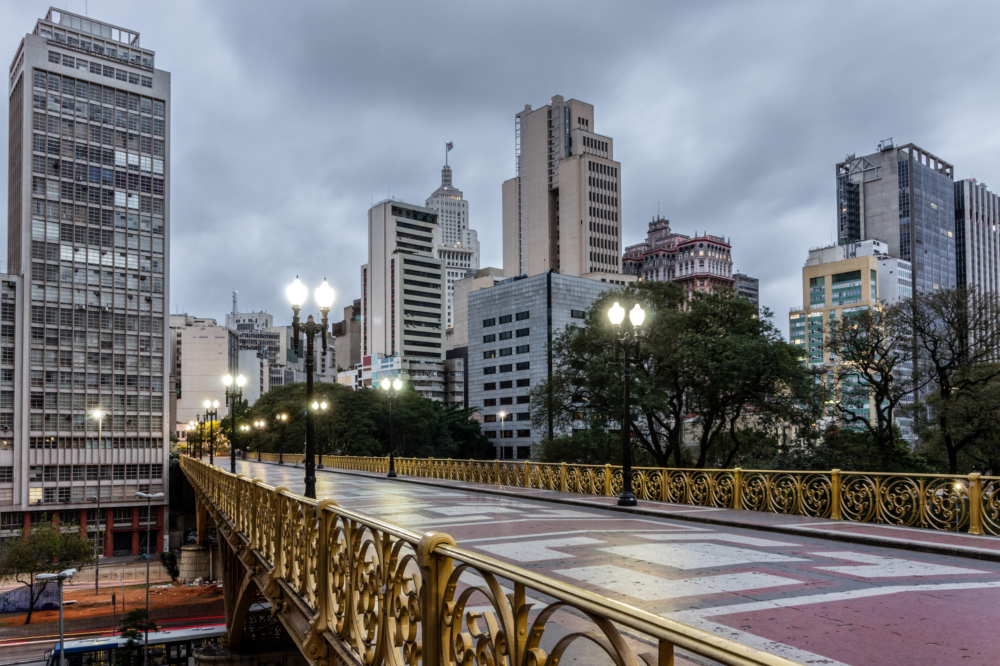
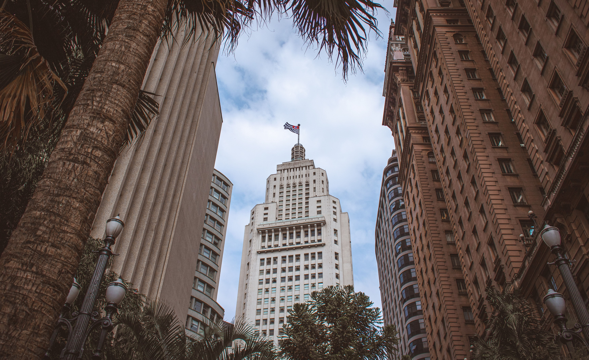

Giro Cultural em SP
Conheça o Projeto
Giro Cultural é um projeto criado pela turma de Multimídia do Senac do ano de 2023. A ideia surgiu a partir de uma pesquisa que mostra que muitos jovens não tem acesso a cultura devido a falta de conhecimento sobre o acesso a lugares artísticos. Mesmo muitos deles sendo gratuitos, essa informação não chega a maioria.


Portanto, Giro Cultural nasceu como uma forma de promover locais culturais acessíveis para a população que tem interesse, como uma forma de incentivar o acesso a cultura de forma democrática, afim de mostrar que a população merece ocupar lugares que muitas das vezes são frequentados apenas pela elite, então o projeto tem como missão mostrar que a Cultura é um direito de todos, é algo que é para o povo!